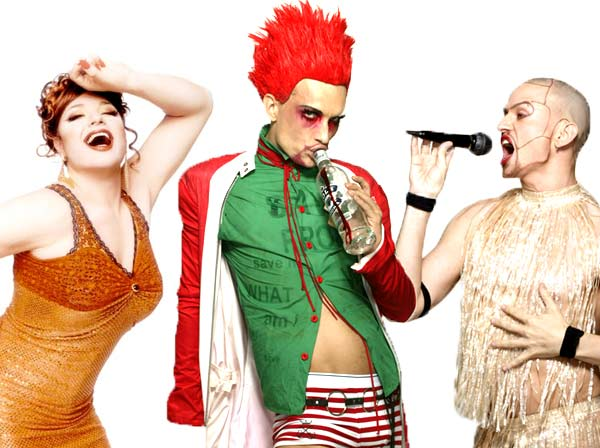

| Klima show | 12. December - 2009 | |
 |
||
| Ramona Macho, | Hairwerk | og Dennis Agerblad |
| Laver en koncert performance i aften lørdag den 12. December til
afslutnings KLIMA festen på
The COme 2gether café. The COme 2gether café. 7 dage i december åbner Højskolerne dørene på Borups Højskole og inviterer alle interesserede til debat, dialog og netværk, café-liv, kunst og musik i forbindelse med Klima konferancen. Adressen er: Borups Højskole, Frederiksholms kanal 24, Lige over for folketingets bagside. www.klimafordummies.dk | ||
| Tilbage |